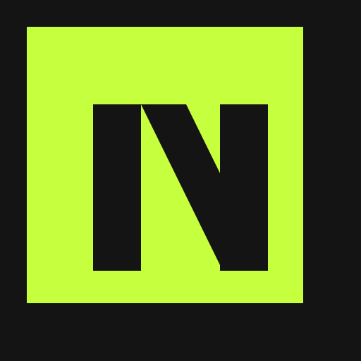
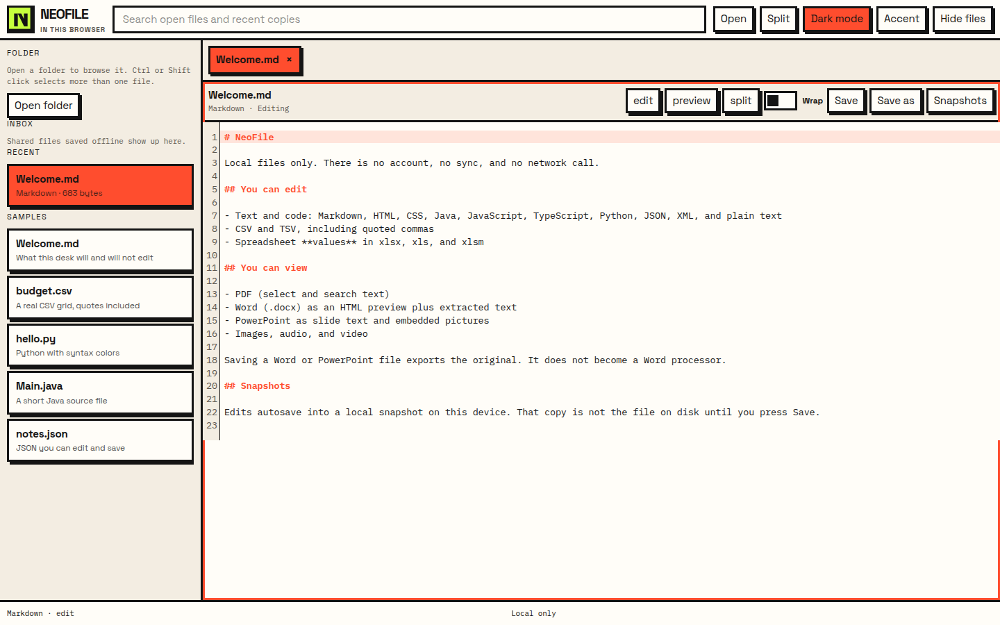
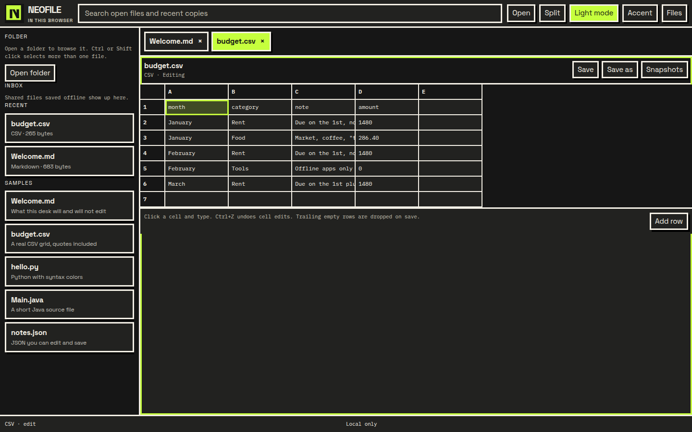
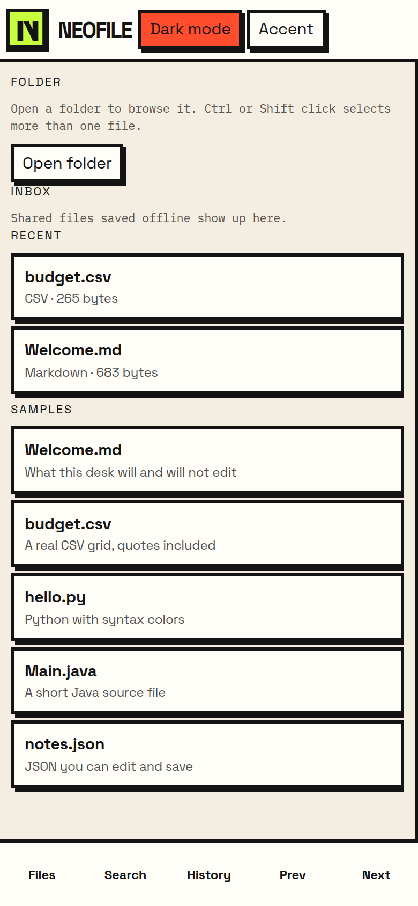
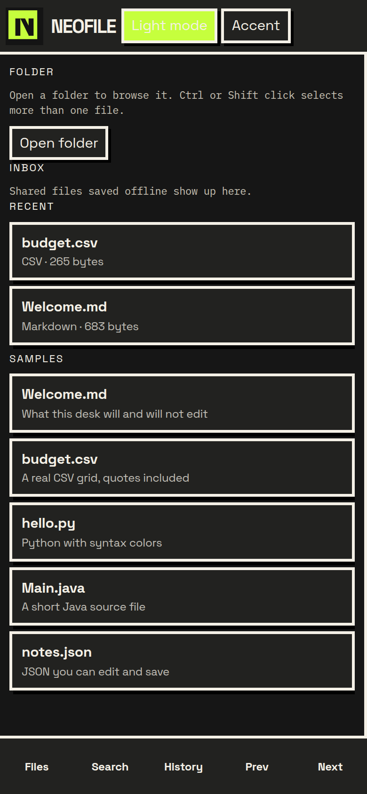

Text and code
Markdown, HTML, CSS, Java, JavaScript, TypeScript, Python, JSON, XML, and plain text. Common languages get syntax color. Markdown has a basic preview.

NeoFileNeoFile is the offline desk for a computer or a phone. Edit text and CSV. Change spreadsheet values. Preview PDF, Word, and PowerPoint without uploading them.
NeoFile web desk is the browser app, including Add to Home Screen. It is not the native iOS app. The first open needs a network connection. After the page is saved on the device, it can open offline until the browser removes that saved copy.
Recommended files for NeoFile 1.0.1. Windows and macOS packages are not signed by Microsoft or Apple, so those systems can show their own warning. The Android APK can ask for permission to install from that source. The unsigned iPhone package is not a normal install.
Markdown, HTML, CSS, Java, JavaScript, TypeScript, Python, JSON, XML, and plain text. Common languages get syntax color. Markdown has a basic preview.
Cells, paste, and undo. Quoted commas and line breaks stay in the file when you save.
xlsx, xlsm, and xls open for cell values. Formulas are not recalculated. Charts, macros, and most formatting drop on save.
Pages, text selection, and search. No annotation editing. Save exports the original file.
Word becomes HTML plus extracted text. PowerPoint shows slide text and embedded pictures, not the layout. Saving exports the original. Export HTML is not a Word file.
Playback and save only. No crop, trim, or filters.
Light editor, dark spreadsheet, and the phone file list. These are screenshots, not drawings.




The recommended file is NeoFile-1.0.1.apk. Copy it to the phone and open it. Android can ask you to allow that files or browser app to install unknown apps. That prompt is one system step. This is not a store install, and it is not zero steps.
The published 1.0.1 APK is signed with a throwaway key from the GitHub build, not a Play signing key. It does not install over the 1.0.0 app. A later file signed with a different key will not update over it until the old app is removed. The APK does not request network access.
The recommended file is NeoFile_1.0.1_x64.msi for 64-bit Windows. The setup exe is the same unsigned app. Windows SmartScreen can say “Windows protected your PC” because the installer is not Authenticode-signed. NeoFile cannot remove that warning and does not ask you to turn SmartScreen off.
Closing the window hides NeoFile in the tray. Quit from the tray menu.
Use NeoFile_1.0.1_aarch64.dmg on Apple silicon and NeoFile_1.0.1_x64.dmg on Intel. Open the disk image and drag NeoFile to Applications.
The app is not notarized and is not signed with an Apple Developer ID. Gatekeeper can block it. These instructions do not include a command to remove that block. The web desk is the copy that does not go through Gatekeeper.
The recommended file is NeoFile_1.0.1_amd64.deb for 64-bit Debian and Ubuntu. Install it with sudo apt install ./NeoFile_1.0.1_amd64.deb. The package depends on libwebkit2gtk-4.1-0, libgtk-3-0, and libayatana-appindicator3-1. Ubuntu 24.04 provides those. No compiler or SDK is required.
The AppImage is the other file. Mark it executable with chmod +x and run it. Video playback needs gstreamer1.0-plugins-good.
The free install is the web desk. In Safari, open this site, choose Share, then Add to Home Screen. The icon is labeled as the web app. It is not an App Store app and it is not a native iOS install.
The file NeoFile-1.0.1-unsigned.ipa is not a one-tap install. iOS will not install it from Files. This project does not have a free path that installs that native package on every iPhone.
No. Word opens as HTML and extracted text. PowerPoint shows slide text and embedded pictures, not positions or animation. Save exports the original file.
Cell values. SheetJS does not recalculate formulas. Charts, pivot tables, macros, images, comments, and most formatting are dropped.
Only files that are already on this device. NeoFile does not sign in anywhere.
Yes, as the web desk. Add this site to the Home Screen from Safari. The first open needs a network connection. Later opens can work offline until iOS removes the saved copy. The unsigned IPA is not that install.
Himanshu Pathak (Himanshu-5680) is the owner. pavitra-prabhakar and vectornomadhp88 are other GitHub accounts of the same person, not separate maintainers. The app was AI-assisted in Cursor, including work built with Grok Bot. That assistance is not ownership.